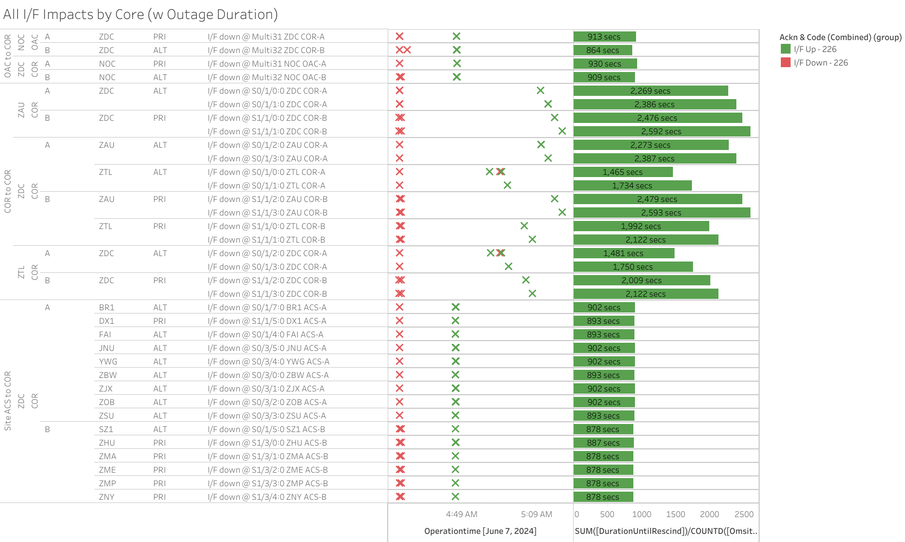
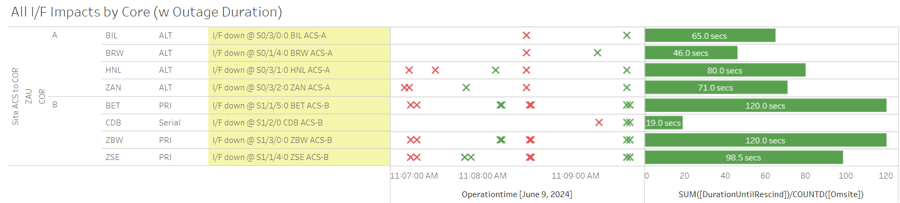

Weekly Highlights 20240605-20240612
DFO2-R1 GUS Field Test (CM1 / BR1)
During the upcoming SSM-WAAS-064, the GUS-Type 1 Receiver (GUST) will be replaced with two (2) G-III receivers at the SGS sites. The new G-III receivers cannot be fully tested in the WAAS lab and must be tested in the field with a live Geostationary Earth Orbit (GEO) satellite. The field test will be conducted at SGS sites S97A and CMA with associated GEO S15-133. During the test, the GEO will be placed in Test Mode and broadcast type 0 messages to WAAS users, which indicate that the GEO satellite message is not to be used for navigation.
- CM1 ticket - ref LIR 802994524
- BR1 ticket - ref LIR 802994824
For more information, refer to the LOA:
- 6/4 15:49 - DFO2-R1 DT Field Test - GEO 133 set to TEST Mode
- 6/4 15:52 - DFO2-R1 DT Field Test - CM1 and BR1 to Maintenance Mode for hardware changes
- 6/4 22:19 - DFO2-R1 DT Field Test - CM1 upgrade complete; ready for RF Tuning
- 6/5 00:11 - DFO2-R1 DT Field Test - BR1 upgrade complete; ready for RF Tuning
- 6/5 23:41 - DFO2-R1 DT Field Test - BR1 restored to Backup Mode in upgraded state
- 6/6 17:20 - DFO2-R1 DT Field Test - BR1 to Maintenance for RF fine-tuning; Control Powered and restored to Primary at 6/6 18:09
- 6/6 18:15 - DFO2-R1 DT Field Test - CM1 RF Tuning; many Control Powers and Faults...
- 6/6 21:22 - DFO2-R1 DT Field Test - BR1 Control Powered and restored to Primary at 6/6 21:44 / CM1 restored to Backup at 6/6 22:20
- 6/6 23:27 - DFO2-R1 DT Field Test - GUS Switchover test: BR1 to Backup / CM1 to Primary
- 6/7 12:48 - DFO2-R1 DT Field Test - GUS Switchover test: CM1 to Backup / BR1 to Primary
- 6/7 17:11 - DFO2-R1 DT Field Test - CM1 GUS to Maintenance Mode to fix loose cable connection; restored to Backup at 6/7 19:19
- 6/7 20:47 - DFO2-R1 DT Field Test - GUS Switchover: BR1 to Backup / CM1 to Primary -- Stability...
6/5 - MX and BRW Comm Troubleshooting at ZLA
- 6/5 17:56 - MMX Ring 2 down hard after
troubleshooting; line cleared after ZLA
COR-B Reset -- 6/6 03:30 (~34431
seconds)
- Determined issue with FTI Telco at Tijuana for at least 4x of the Mexico Ring 2 circuits; MSD was unable to test...
- 6/5 21:40 - Ring 1 ZLA-ZTL COR-COR ALT comms took a ~20 second hit
- 6/5 22:46 - BET Ring 1 comms impacted while troubleshooting BRW circuit; last event cleared at 6/5 23:42 (~442 seconds)
- 6/5 22:50 - Ring 2 ZLA-ZTL COR-COR PRI comms down hard; line cleared after ZLA COR-B Reset -- 6/6 03:30 (~16062 seconds)
- 6/5 23:41 - DFO2-R1 DT Field Test - BR1 restored to Backup Mode in upgraded state, still needs fine-tuning...
- 6/6 03:22 - ZLA COR-B Router Reset to address apparent bad state after troubleshooting MMX and BRW Ring 2 comms
6/6 - MMX WRE-A Fault
- 6/6 13:13 - MMX WRE-A Faulted with SEs 28, 29, 52, 53, 59; Control Powered and restored to Normal at 6/6 14:00
6/7 - ZDC Comm Outage (MR-184671B)
- 6/7 04:32 - Major comm outage at ZDC affecting
both Rings for
MR-184671B; SM9-131 GEO automatically switched from ZDC C&V to ZTL C&V with SE 740 TTA exceeded and SE 741 C&V Stats DX1 GUS 100% 1.0; ref LIR 811870924- WRS and O&M lines cleared at 6/7 04:47 (~891 seconds)
- COR-COR lines all cleared by 6/7 05:15 (~2593 seconds)

6/10 - BIL WRS Power Panel; WRE-A did not recover
- 6/10 11:03 - BIL WRS Outage for Power Panel work;
ref LIR
44222321
- 6/10 12:10 - BIL WREs B and C returned to Normal
- BIL WRE-A Freq Std failed on power restore; Shutdown at 6/10 19:06; ref LAD 813533824...
6/10 - ZOB PCU-C Replaced
- 6/7 12:22 - ZOB WRE-C returns to Maintenance after PCU-C replacement; waiting to reconfigure PCU-C on Monday; cycling in Maintenance Mode...
- 6/10 16:58 - ZOB PCU-C Configured; ZOB
WRE-C restored to Normal at 6/10
17:29
- ZOB WRE-C - 5/29-6/10 - PCU-C failed
6/10 - ZOB WRE-C Running with High RAM
- 6/10 21:18 - ZOB WRE-C Control Powered OFF to
address high RAM and Disk Util usage; Control
Powered ON and restored to Normal at
6/10 22:26
- ZOB WRE-C is still running with high RAM and occasionally alarms with SE 306 CPU Threshold exceeded; ref LIR 813707424
Recommend replace WRE-C DCP with spare; site requested Baseline Media
6/10 - MMD-ZTL Ring 1 Cutover to Ethernet (SSM-WAAS-066)
- 6/10 18:20 - SSM-WAAS-066 - MMD-ZTL Serial comm disconnected at ZTL COR-A; MMD-ZTL comm traffic transitioned to Ethernet VPLS solution with no impact to performance
Various Comm Impacts
* Does not include single-line impacts <60 seconds which do not cause an outage
ZME Comm Events
- 6/10 15:15 - ZME Ring 1 ALT / Ring 2 PRI comms took a ~40 second hit
- 6/11 12:03 - ZME Ring 1 ALT / Ring 2 PRI comms flapping; last event cleared at 6/11 12:08 (~120 seconds total)
- 6/11 16:37 - ZME Ring 1 ALT / Ring 2 PRI comms down hard; line cleared at 6/11 16:39 (~132 seconds)
- 6/11 17:20 - ZME Ring 1 ALT / Ring 2 PRI comms took a ~45 second hit
Other Sites
- 6/6 10:35 - DX1 Ring 1 ALT / Ring 2 PRI comms took a ~20 second hit
- 6/7 07:36 - ZDC-ZTL COR-COR Ring 2 PRI comm line down hard; line cleared at 6/7 08:08 (~1920 seconds)
- 6/9 11:07 - Brief comm impacts for several sites apparently centered at ZAU Comm Node affecting both Rings

- 6/10 12:08 - CM1 Ring 1 ALT / Ring 2 PRI and YFB Ring 2 comms down hard; all lines cleared at 6/10 12:19 (~688 seconds)
- 6/10 12:50 - MMX Ring 2 comms down hard; line cleared at 6/10 13:27 (~2192 seconds)
- 6/11 04:41 - ZJX Ring 1 PRI / Ring 2 ALT comms took a ~40 second hit
- 6/12 06:03 - ZSU Ring 1 ALT / Ring 2 PRI comms took a ~30 second hit
- 6/12 08:41 - AP1 Ring 1 ALT / Ring 2 PRI comms took a ~30 second hit
- 6/12 11:54 - BR1 Ring 1 PRI / ALT comms took a ~30 second hit
- 6/12 18:06 - ZSU Ring 1 PRI / Ring 2 ALT comms down hard...
SSM-WAAS-066 Circuits Outstanding
- OTZ - Following circuits not delivered
/ SA'd
- Ring 1 PRI to ZAU - FTIH-WS-053504
- Ring 2 PRI to ZLA - FTIH-WS-053508
- Ring 2 ALT to ZLA - FTIH-WS-053509
- BRW - Ring 2 ALT to ZLA -
FTIH-WS-053531
- 5/23 - BRW ACS-B Router replaced
- 5/23 17:35 - BRW Ring 2
PRI comms down
hard --
ISR 0521-0090; ref LIR 802755624 --On hold until FAA tech can configure ACS-B router - Troubleshooting ongoing...
MTP - Both Rings
- 3/14 23:20 - MMD, MMX, MTP Ring 1 down
hard -- MTP / MMD OFFLINE; MMX has
partial RG1 on Ring 1 and is
flapping to No Data Reported; ref LIR
764089024 --
Elevated to Level 2. Fires have damaged lines. Local TELCO addressing issues. - 5/15 18:16 - All Ring 1 Mexico comms down hard; all Mexico OFFLINE; ref LIR 798370024; all lines except MTP/MSD Ring 1 cleared at 5/16 01:07 (~128679 seconds for MPR/MMX; ~450104 seconds for MMD)
MSD - Both Rings
- 4/25 15:38 - MSD Ring 1 comms down hard...
OTZ - Only circuit available down
- 5/29 19:04 - OTZ Ring 1 ALT -- OTZ
OFFLINE
ISR-0426-00908; ref LIR 792254924... - 6/3 22:03 - OTZ Ring 1 ALT comms looped; loop cleared at 6/3 22:13 (~600 seconds)
List of current offline WREs
List of current offline WREs -- ref WAAS Status Monitor
- ZOB WRE-C - 5/29-... - PCU-C failed
- OTZ WRS - 5/29-... - Comm Line down -- only one available until remaining circuits are deliverd
All Depot shipments to Mexico are halted until the customs process can be finalized
- MMX WRE-C - 5/15-... - Processor failed and could not be restored
- MPR WRE-B - 5/3-... - Inits failing -- looks like a bad freq std; due to shipping issues, there is no spare Freq Std and no ETA to recover WRE-B...
- MTP WRE-B - 7/21/23-... - MTP WRE-B repaired during site visit 5/10/24, but no comm to the site to verify WRE to Normal...
5/11/23-... - MX Ring 2 Satcom Upgrade
MX WAAS Sites comm upgrades in progress:
- 6/5 - Troubleshooting at ZLA-Tijuana shows 4 of 5 circuits have a telco issue localized to Tijuana that must be resolved by FTI; for the MSD circuit, Tijuana could see a loop from ZLA, but ZLA could not see the loop locally -- possible cable issue at ZLA
- Frequentis coordinating with SENEAM at TJX to complete end-to-end testing from remote site to TJX
- After successful testing to TJX; comms should come up at ZLA (if not, coordinate with FTI Harris)
- MMX Ring 2 is currently green, but no UDP packets are coming through

Major Events


Comm Events